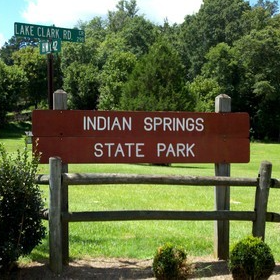
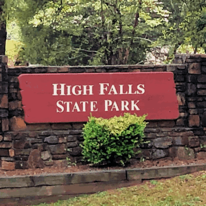
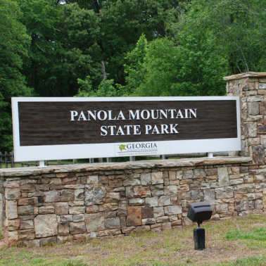

I will be hosting three trips all will be a little different but some activities
will remain the same and anyone can join.
January 4th - 19th: We will be heading to Indian Springs State Park, this will mainly be a
fishing trip where I teach everyone how to fish, these sessions will be held on each trip but
this first main trip I will be mainly focusing on fishing so be sure to join if you're interested.
April 6th - 20th: I will be hosting a hunting trip in High Falls State Park, this will be a
mainly adult-held trip unless you wish for your child to be with you. I will have professionals
with me explaining the basics of hunting so we probably won't have a proper hunting session but
we will be going out in groups to scout out areas.
October 7th - 28th: This final trip of the year will be a mixture of fishing and hunting and will
be held in Panola Mountain State Park so make sure you have all your gear ready! Anyone can join
as per usual just make sure you stay safe and warm since this trip is scheduled in November.
We will bring spare fishing rods and hunting rifles so if you do not have your own do not worry
about coming empty-handed.

Indian Springs State Park:
January 4th - 19th

High Falls State Park:
April 6th - 20th

Panola Mountain State Park:
October 7th - 28th